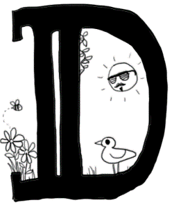
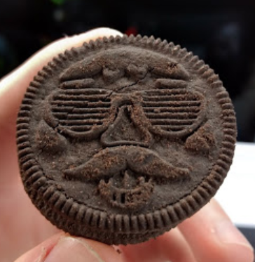

 avid and I stopped at a Safeway on our way to a weekend trip, secure in our knowledge of the Oreo’s place in society. However, what we saw in that San Jose Safeway rocked us to our creme-filled core. What we found was not only the standard variety of Oreos (regular, double stuffed, thin, etc.) but also three novelty flavours, including “Spring Oreos”. Out of sheer curiosity, we discarded the original plan of stocking up on granola bars in favour of purchasing a box of Oreos. Now we shall share our experience with you, the inquisitive reader.
We chose Spring Oreos over the other varieties because the packaging claims they have the “same taste” as regular Oreos, and we weren’t prepared to complicate our palates’ relationship with this staple. The first layer of the Spring Oreo experience is the festive springtime patterns gracing the top surface. These come in four varieties: 
Despite having four designs to ensure an adequate user experience for all walks of life, the design with the man with a goatee was puzzling at best, and absurd at worst. It detracts attention from the other three designs, making the experience significantly less holistic. However, the most striking feature of the Spring Oreos is their festive yellow filling. While the box’s claim that the filling has the same taste as that of the original Oreo is true, the yellow colour elevates the consumer’s experience by some unknown (perhaps neurochemical?) mechanism.
The main drawback is the crumbly gatekeeper to the discussed yellow filling; the iconic biscuits themselves. Without a direct, side to side comparison with the original Oreo, it appeared that the Spring Oreos’ cocoa-infused shells were more brittle than what either of us had previously experienced. Finding an entire, uncompromised cookie was a rare occurrence, and the end of the box yielded many small fragments. However, it may be argued that this leads the consumer to savour the undamaged cookie to a higher degree. It is unknown whether this was an intentional move on Nabisco’s part, a characteristic of Spring Oreos, or an anomaly pertaining only to this box. Further studies will be necessary.
A previously unexplored application of the Oreo is its use as a hiking snack, an alternative to more conventional options such as trail mix or granola bars. We found that they served this purpose with surprising success. With four Oreos each we were able to sustain ourselves through a hike lasting a few hours. We also found that when placed in the frame of any photograph, they highlighted the beauty of the surrounding scenery. This is an unexpected result and may be associated with their festive yellow colour. Another proposed use for the Spring Oreo is to lure wildlife. We offered a bite to our origami frog, Froge, and he seemed to thoroughly enjoy it.
The Spring Oreo, with its conservative flavour, is a safe bet for any Oreo lover. Its festive designs and bold yellow filling are an exciting departure from what we, as a culture, have grown to see as the monochromatic limits of the Oreo. They are well suited to typical snacking needs, showed potential as a hiking provision, and can surely be extended to many other activities both mundane and adventurous. The release of Spring Oreos is a bold move on Nabisco’s part, but one which we support wholeheartedly. Overall, this experience rates 4/5 with the only disappointment being the lack of structural integrity. ★★★★☆